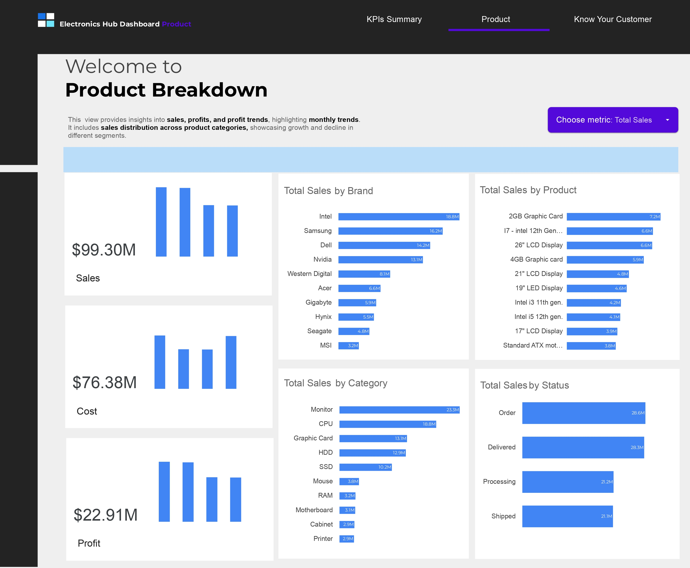
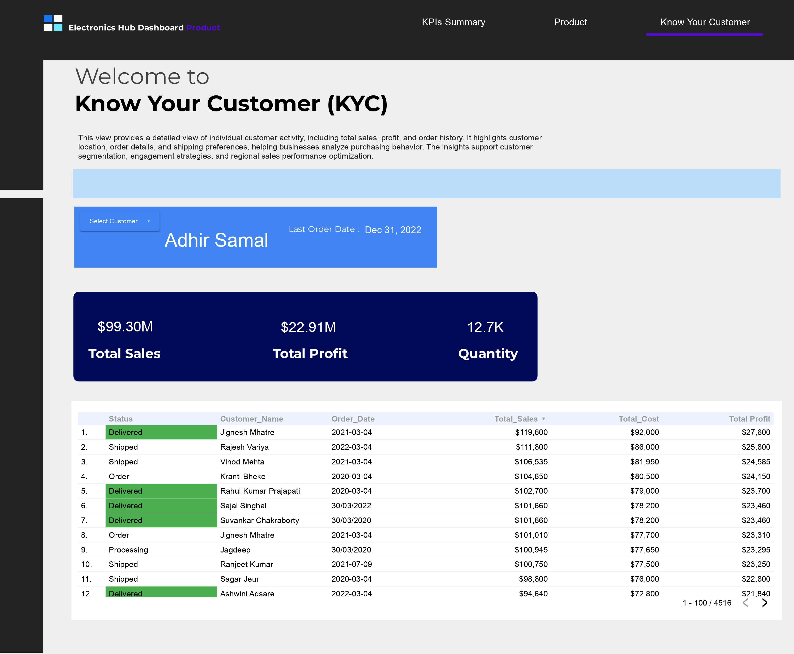

Electronics Hub Dashboard
A comprehensive Looker Studio dashboard designed to analyze and visualize sales performance across electronics product categories in real time. Tracks key metrics including sales volume ($99.30M), profit ($22.91M), cost ($76.38M), and order volume (5.1K units), with detailed breakdowns by product category, brand performance, and supervisor productivity.



Project overview
The Electronics Hub Dashboard is an interactive Looker Studio visualization designed to provide real-time insights into electronics retail sales performance. The dashboard aggregates data across multiple product categories (CPUs, Monitors, Graphics Cards, HDDs, Keyboards, and more) to enable data-driven decision-making at the operational and strategic levels.
Key performance indicators displayed include total sales volume ($99.30M), profit margins ($22.91M), cost of goods sold ($76.38M), order volume (5.1K orders), and quantity moved (12.7K units). The dashboard features dynamic visualizations breaking down performance by product category, brand, product SKU, order status, and supervisor team performance, with time-series analysis of sales trends.
Approach & tools
The dashboard was built in Looker Studio, leveraging structured electronics sales data to create an intuitive, interactive reporting experience. Data is organized into multiple hierarchical levels (overall metrics, category breakdown, product detail, status tracking) allowing users to drill down from summary KPIs to granular transaction-level insights.
The dashboard uses calculated fields to compute key metrics such as profit margins (Sales - Cost), month-over-month growth rates, and performance variance against targets. Interactive filters enable users to slice data by date range, product category, brand, and supervisor for focused analysis.
Looker Studio · Data Visualization · Dashboard Design
Project impact
The Electronics Hub Dashboard provides a centralized, real-time view of sales operations, enabling stakeholders to quickly identify performance trends, product strengths and weaknesses, and supervisor productivity levels. By making complex sales data accessible through interactive visualizations, the dashboard supports faster decision-making and enables operational teams to respond to market conditions more effectively.
The breakdown by product category, brand, and order status provides actionable insights for inventory management, marketing strategy optimization, and sales team coaching. The supervisor performance tracking enables management to identify high performers and coaching opportunities.
Explore the work
Open the project repository to review the analysis, dashboards, and supporting files.
Start a conversation
Have a data question or project in mind?
Let's talk about the problem you're trying to solve and how data can help.